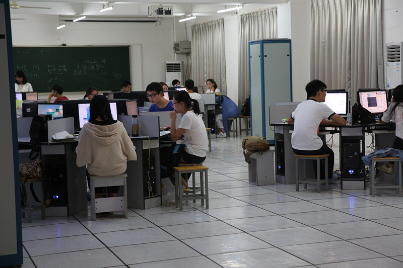

一．系部介绍:
武汉学院以公益办学为宗旨，以创办国际化应用型专业大学为定位，将信息科技作为重点发展专业。软件工程、网络工程、物联网工程等专业将以腾讯等国际知名企业为依托，构建与知名企业深度融合的订单培养模式。毕业生优先推荐腾讯公司实习和就业。 武汉学院信息系经过十多年的发展，形成了一支管理水平高、教学效果好、科研能力强的师资队伍，累计为社会培养优秀人才近万人，是武汉学院重点建设和发展院系。
二．专业设置：
软件工程（腾讯精英班）
软件工程
物联网工程
网络工程
计算机信息管理（专科）
三．武汉学院重点实验班
1.软件工程（腾讯精英班）
软件工程（腾讯精英班）是由腾讯公益基金资助设立，每生每年获得腾讯奖学金，用于支持学生学费、腾讯企业培训和海外交流。该班实施“成果导向”的教育方法，秉承“全人发展”教育理念，课程设置实现腾讯企业培训和理论教学长周期无缝对接。毕业后将优先推荐腾讯公司实习和就业。
2. 物联网工程
物联网工程是武汉学院重点打造专业，立足学生专业核心技能培养和职业核心能力成长，以国内一流的智能家家居基地为支撑，发挥腾讯智慧城市等资源优势，构建与知名企业深度融合的订单培养模式。2016级物联网专业新生均有机会获得学校奖学金，用于支持学生学费、优秀企业实习和海外交流。
四．学生培养
1. 组织学生参加《“高教社”杯全国大学生数学建模竞赛》，多次获得国家级、省级奖项。

2. 组织学生参加《“蓝桥杯”软件设计与创业大赛》，多次获得国家级、省级奖项。多名获奖学生被国际知名IT企业录用。

五．优秀毕业生
乔亚钧，男，2004年9月考入学武汉学院信息系(信息管理与信息系统)专业就读，在校期间，先后担任系分团委副书记、院团委网络部部长，分别授予“2006年度优秀团干”、“2007年优秀毕业生”等称号。2008年3月19日湖北地区奥运火炬手名单新闻发布会在湖北日报传媒集团大楼举行，会上公布了由可口可乐选拔的奥运火炬手最终名单，并颁发了由北京奥组委制作的《北京2008年奥运会火炬接力火炬手资格确认函》，乔亚钧被正式确认为2008年第29届北京奥运会火炬手。在接受媒体采访的时候他说，“很高兴能当选火炬手，要感谢可口可乐公司给我这次机会，还要感谢培育我的母校武汉学院，还要我所在单位长江日报汉网传媒的大力支持。在今后的工作中会更加努力奋斗，将奥运精神传递给更多的人，为北京奥运会的胜利召开而呐喊助威！”
李亚斌，男，甘肃庆阳人，1990年出生，信息系0901班团支部书记，院记者团团长。现已通过OCP（Oracle Certified Professional，甲骨文数据认证专家）国际性认证，成为“中国软件与技术服务股份有限公司”的AFC（Auto Fare Collection，自动售检票系统）系统工程师，并且作为中软AFC驻武汉项目部的一员，全程参与到武汉地铁二号线和四号线的项目当中，与他的同事一同担起了江城地铁建设的重担
龚芮卉，女，2011年已与“中国远洋集团”签约的她毅然放弃待遇优厚的工作，毅然走向了艰辛的考研路，最终以417 分的骄人成绩考取了中南财经政法大学研究生，并荣获信息系“考研之最”的殊荣，她就是0702班中共党员龚芮卉。 回顾自己的心路历程，她坦然地说道：军训被选为新生代表发言人时便对武汉学院信息系产生了浓厚的感情，她便立志一定要在学习上发愤图强。平日养成总结归纳的良习，每天都有周密的计划，在反省中完善自我。“陈一丹”奖学金、国家励志奖学金、院一二等奖学金都是她荣获的骄人成绩。大二时成为团学联秘书长之后，她更是发挥领导才干极尽所能，尽心尽力为同学们服务。每天即使开完各项例会，仍暂时放下疲倦直奔自习室，也正是对学习的专心，故而很多次都差点被锁到图书馆里。在刻苦认真学习的同时，她还积极主动参加各项校园活动。主持人、诗歌朗诵者、优秀记者都是她的不同身份。她深知大学生活应该是丰富多彩，她以自己的经历向无数大学生证实：社团工作与学习是可以两不误，并且相互促进的。谈到考研，龚芮卉认为考研的准备过程就是不断地跟自己的惰性，自己的恐惧，自己的沮丧作斗争的过程。 最重要的是源于喜欢，贵在坚持。